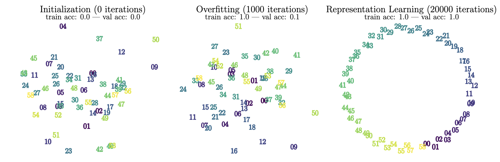

암기를 넘어 — 모델은 언제, 어떻게 규칙을 깨치는가
다 외운 줄 알았던 모델이, 한참 뒤에 갑자기 규칙을 깨친다

출력 전체가 수열인 seq2seq 과제로 Grokking 연구를 확장한다
발현 여부 → 내부 구조 → 진행 양상, 세 단계로 깊어지는 질문
정렬 키(항등 / 주기) × 위치 매핑(단조 / 비단조) — 두 개의 독립적인 축
| 기준 | 정렬 키 | 위치 매핑 | 이 기준이 검증하는 것 |
|---|---|---|---|
| A 오름차순 | 항등 (값 그대로) | 단조 | Grokking 발현의 기준선 |
| B 잉여류 | 주기 (x mod m) | 단조 | 키에 주기 구조가 들어가면? |
| C 교번 | 항등 (값 그대로) | 비단조 | 순위와 자리의 대응이 꼬이면? |
Grokking이 관찰될 수 있는 조건을 의도적으로 만든다
| 연구 문제 | 분석 방법 | 무엇을 확인하는가 |
|---|---|---|
| RQ 1 발현 | 학습 곡선 분석 | 훈련·검증 정확도 곡선, Grokking gap을 정렬 기준 간 비교 |
| RQ 2 구조 | 내부 표현 분석 | 임베딩 차원 축소(PCA) — 수직선·군집·주기 구조가 실제로 형성되는가 |
| RQ 3 양상 | 출력 연속성 분석 | 출력 위치를 의미 단위로 묶은 그룹별 정확도 곡선 — 한 번에 vs 그룹별 |
어느 쪽 결과가 나와도 해석 가능한 설계